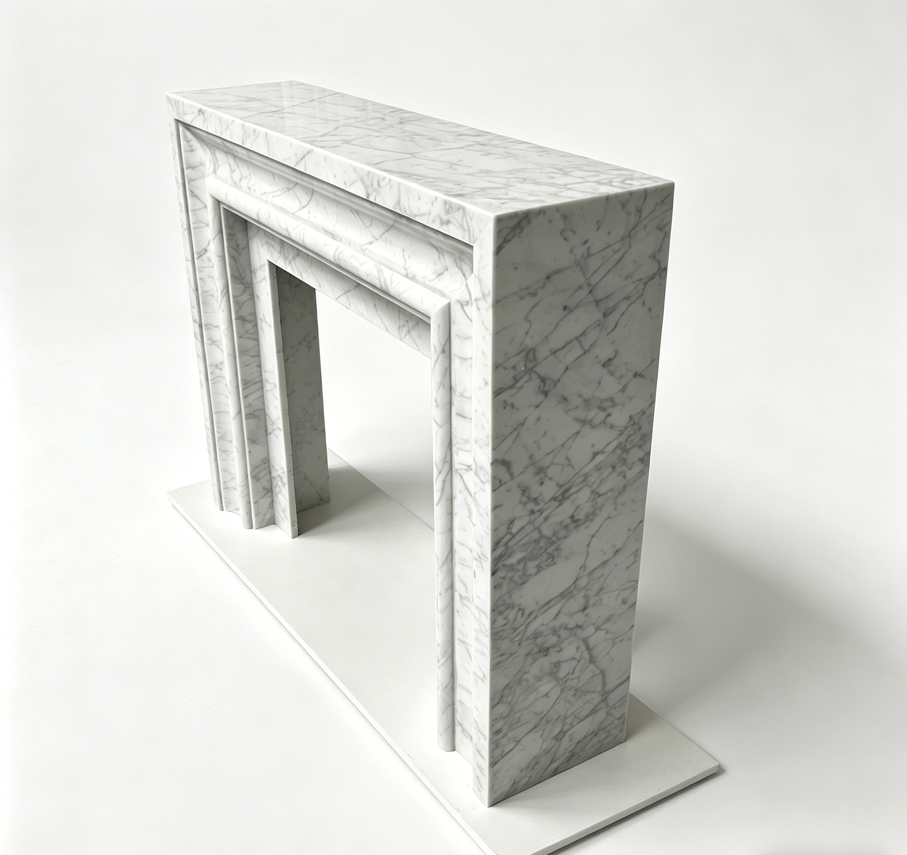
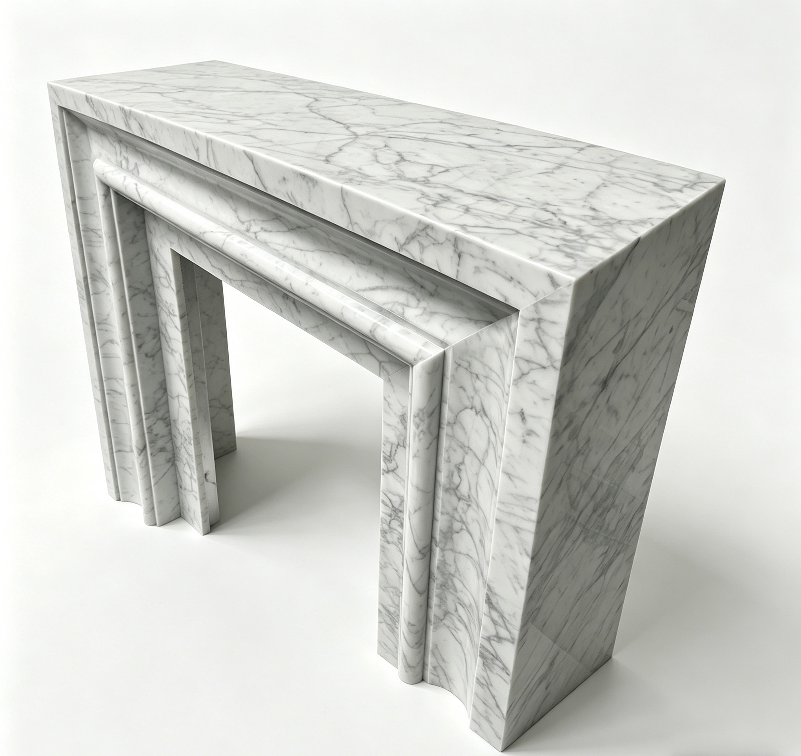
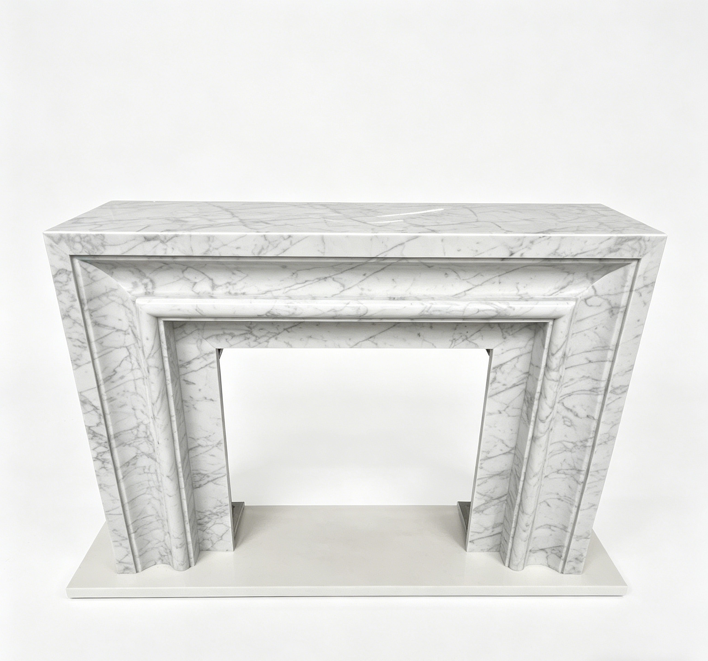
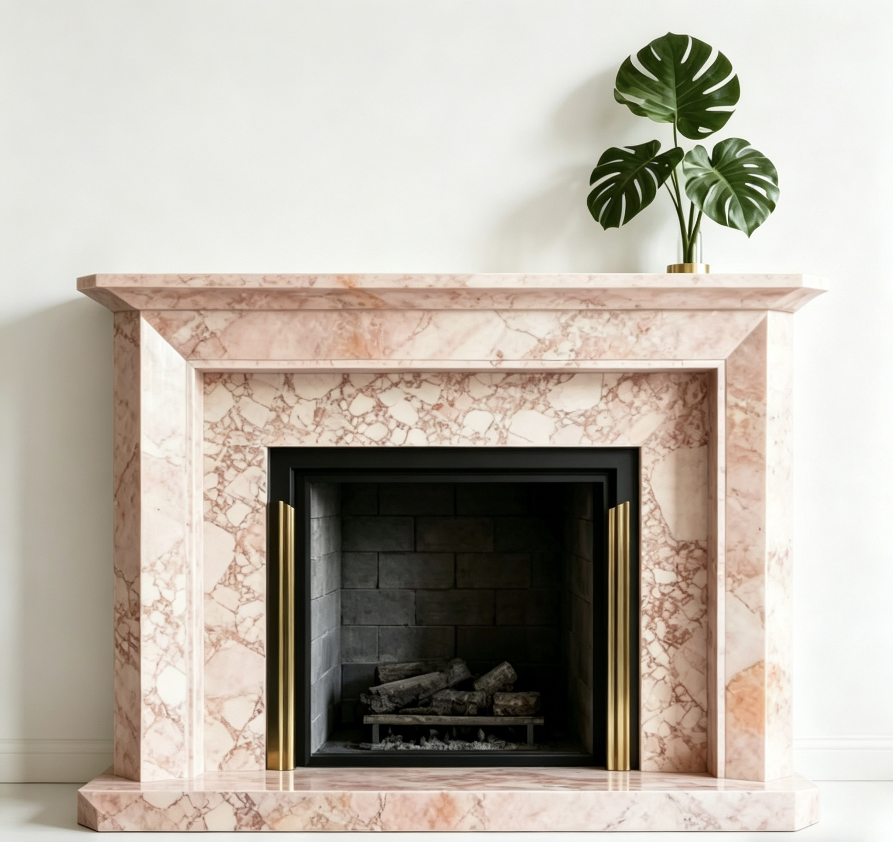

Back to products
MaterialNatural Calacatta White Marble, pink marble, or custom natural stone
FinishPolished, honed, or custom sealed finish
MOQ1 set for custom projects
Lead Time25-50 days after drawing and material confirmation
Custom Marble Fireplace
Modern Calacatta White Marble Fireplace Surround
A modern Calacatta white marble fireplace surround for living rooms, villas, hotels, and high-end interior projects.
Send your target size, quantity, finish, and reference photo or drawing for factory review.
Product Overview
Built around your drawing, material, and market requirement.
This modern marble fireplace surround is designed for interiors that need a refined natural stone focal point. Overall size, stone material, profile detail, side panels, mantel proportion, surface finish, and export packing can be customized before production.
MaterialNatural Calacatta White Marble, pink marble, or custom natural stone
UsageLiving Room, Villa, Hotel, Interior Project, Custom Fireplace
FinishPolished, honed, or custom sealed finish
MOQ1 set for custom projects
Lead Time25-50 days after drawing and material confirmation
Applications
Where buyers typically use this product.
Use these directions to match the product to your collection, project type, or target market before requesting a quote.
Custom Options
Tell us what you need to change before production starts.
Most buyers confirm size, finish, structure, and packing first. Use this section to identify the details you want quoted or adjusted.
- Custom fireplace surround width, height, and depth
- Calacatta white marble, pink marble, or selected natural stone
- Custom mantel, side panel, and profile detail
- Polished, honed, or sealed surface finish
- Reinforced export wooden crate packing for stone fireplace pieces
Buyer Questions
Common questions before ordering custom stone products.
These are the questions buyers usually ask before moving from reference stage to quote confirmation and production review.
Can the marble fireplace surround size be customized?
Yes. We can produce the surround according to your wall opening, drawing, reference photo, or project measurement.
Can I choose another marble material?
Yes. Calacatta white marble, pink marble, travertine, limestone, and other natural stones can be discussed.
How do you pack fireplace surround pieces for export?
We separate and protect the stone pieces with foam, corner protection, and reinforced wooden crates for international shipping.